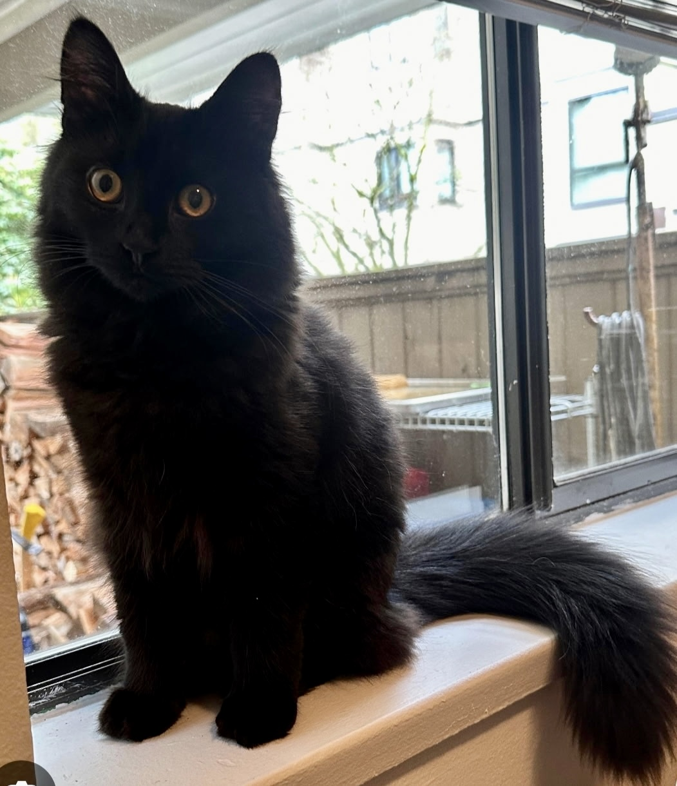
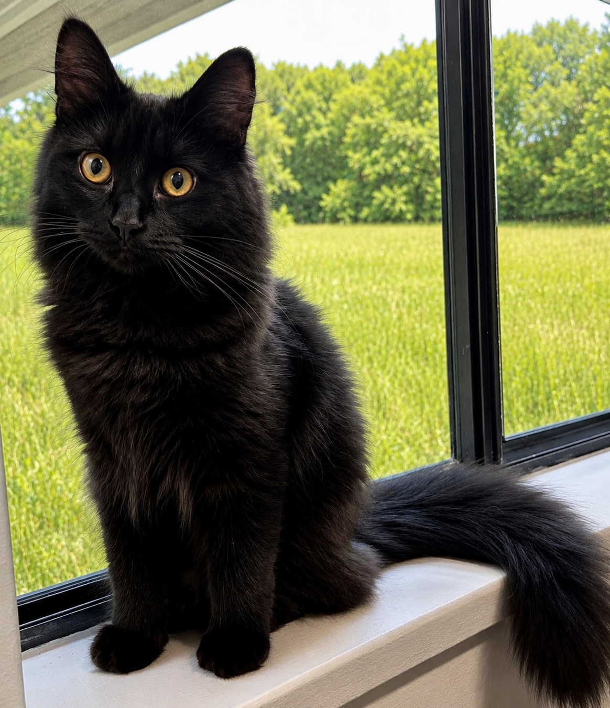
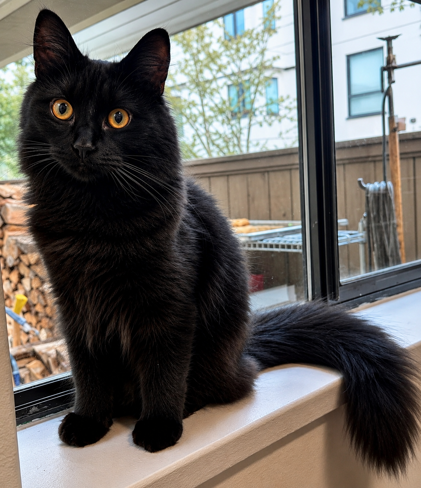

Primal Urge Portfolio
Kitty 605-03
Three polished views of a bright-eyed black cat, prepared as a simple mobile-friendly portfolio page.


Take the image in View A and fix up the lighting and the detail. The image behind the cat should be a grassy field. The new image should be photorealistic.

Looks good. Do one more version that keeps the current background image but clean up the detail and focus of the background.
core3.com/PrimalUrge/image/.